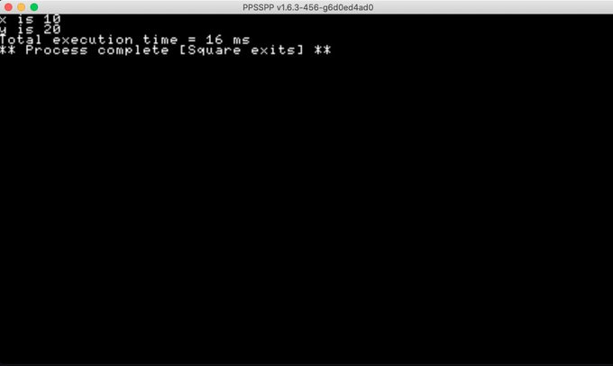

Making the PSP run .Net binaries
So, for a while I have wanted to get in to PSP programming. I've had a PSP since forever (2010?) and I always loved the form factor. I would dearly love a PSVita, but I can't really justify getting one without doing at least one PSP project.
I decided to start looking at PSP development again. I've probably started 2 or 3 times over the last 10 or so years, but this time I finally went past a simple "hello, world!" or moving a simple block around the screen using the controls. Yes, I did those first too this time, but I also used that as an exercise to perfect my workflow. I now have a set-up on both PC (using a pre built SDK) and Mac (using an SDK I built myself from source) and have VSCode, USB HostFS, and PPSSPP running on both for quickly running code.
The main issue with PSP homebrew these days is the lack of any really great documentation online. We have a lot of fragments, and the first week or so consisted of me searching out those fragments to see what I could find. I found enough to get going and so started on the next phase - porting DNA.
Dot Net Anywhere
DNA is a project by Chris Bacon. It is somewhat abandoned, but still runs most modern DotNet Assemblies with some caveats. It was used to bootstrap Blazor, and is really pretty good at running basic code, albeit through an interpreter. My PSP port is based on my repo, where I pulled together a lot of the Blazor changes and a few other improvements made in other branches not merged in the main repo, but on the whole it is Chris's original code base.
Bootstrapping
Making the code run on PSP was more about removing the parts that didn't fit with the way in which the PSP functions, rather than anything else. The PSP can't use dynamic libraries, so all the P/Invoke code needed to be removed. There isn't really a console, so I also removed all the console based code. After doing all this, the code almost compiled.
GLOBS
The main part of the code that still failed to work was the code relating to the disk/filesystem access. The DNA code uses the Unix/Linux style GLOB API to access that type of data, and the PSP SDK seems to be missing that chunk of code, despite having the headers. I hunted around for a solution. I managed to find a project called Bennu Game Development and a post regarding their PSP port. This used an implementation of GLOB called "diet-glob", and this worked nicely as a drop in replacement for the PSP. After that the code compiled!
Making something happen
So, having a runtime was not very useful on its own. So I created a new chunk of code specific to the PSP, in a namespace called "PSP", and wired that in to the interpreter. I then wrote a simple app with the following code:
using Psp;
namespace testSimple
{
class Program
{
static void Main(string[] args)
{
var x = 10;
Debug.ScreenPrintf($"x is {x}\n");
var y = 20;
Debug.ScreenPrintf($"y is {y}\n");
}
}
}
And ran it on the PPSSPP emulator. After a couple of tweaks, I was greeted with the following image:

Wow! It worked... So next was to install on a real PSP:
And.... the same app on a PSP:
Conclusion
Well, it works. I am in the process of fleshing the code out more before releasing it. But I have now got a lot more working. Watch this space for more updates.